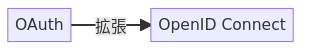
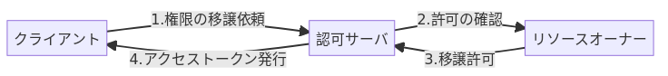

OpenID Connect
概要
OpenID Connectとは、サービス間で、利用者の同意に基づきID情報を流通するための標準仕様。利用者がOpenID提供サイトに登録したID情報を使って、ほかのOpenID対応サイトにログインすることが可能になる。
OIDCと略される。
OpenID ConnectはOauth 2.0の拡張仕様。OAuth 2.0はアクセストークンを発行するための処理フローを定めている。流用してIDトークンも発行できるようにしたのがOpenID Connect。大雑把にいうと、「OpenID ConnectはIDトークンを発行するための仕様」。IDトークンはユーザが認証されたという事実とそのユーザの属性情報を捏造されていないことを確認可能な方法で、各所へ引き回すためにある。
Memo
OAuthとの違い
よく混同される。認証と認可の違い。
- OAuthは認可の規格である(誰であるかは無視し、何ができるかに着目する。切符のようなもの)
- 認証は規格にないので、安全に認証に使うために独自実装が必要になる
- AuthN
- OpenID ConnectはOAuthを拡張して、認証に対応できるようにしたもの
- AuthZ
flowchart LR a[OAuth] b[OpenID Connect] a -- 拡張 --> b

flowchart LR C[クライアント] S[認可サーバ] R[リソースオーナー] C -- 1.権限の移譲依頼 --> S S -- 2.許可の確認 --> R R -- 3.移譲許可 --> S S -- 4.アクセストークン発行 --> C

アクセストークンとIDトークン
- IDトークンは認証、アクセストークンが認可
- IDトークンはユーザが認証されたことを証明するトークン。認証後のその先のリソースサーバにアクセスするための認可には使用できない
- アクセストークンは認可サーバが生成し、クライアントがAPIでリソースを取り出すときに使う
- IDトークンにはaudクレームが含まれる。そのトークンがどのクライアントのために発行されたものかという情報が入っている。なのでクライアントは自身のためのトークンかどうか調べることができる
Reference
一番分かりやすい OpenID Connect の説明 - Qiita
わかりやすい解説。
- 発行者の署名付きログイン情報
- IDトークンの発行者をOpenID プロバイダーと呼ぶ
- OpenIDプロバイダーがクライアントアプリケーションに対してIDトークンを発行する
- トークンを発行する前にユーザに発行するか尋ねる。発行する場合は本人確認情報の提示を求める
- 本人確認情報が正しければIDトークンを生成し、クライアントアプリケーションに渡す
- OpenID ConnectはOauth 2.0の拡張仕様。OAuth 2.0はアクセストークンを発行するための処理フローを定めている。流用してIDトークンも発行できるようにしたのがOpenID Connect
- 「OpenID Connect 1.0 は OAuth 2.0 プロトコル上のシンプルなアイデンティティレイヤーである」
- IDトークンはユーザが認証されたという事実とそのユーザの属性情報を捏造されていないことを確認可能な方法で、各所に引き回すためにある
IDトークンが分かれば OpenID Connect が分かる - Qiita
トークンの中身を見ながらの解説。